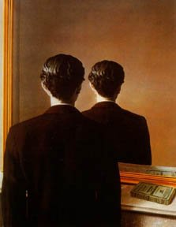

Not to Be Reproduced (La reproduction interdite)
René Magritte · 1937 · Oil on canvas · 81.3 × 65 cm · Museum Boijmans Van Beuningen, Rotterdam
In copyright. Look and learn: shown for study, not for download.
Edward James, a poet and Magritte's patron, commissioned this painting. It was one of three that Magritte produced for the ballroom of James's London home, and it is held to be a portrait of James although his face is not shown. The book on the mantelpiece is a worn copy, in French, of Edgar Allan Poe's novel The Narrative of Arthur Gordon Pym of Nantucket.